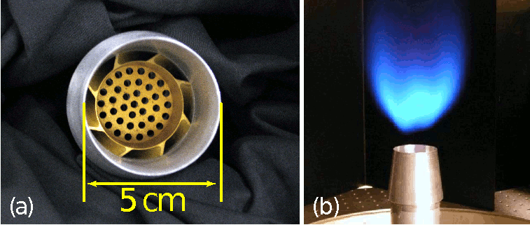

If you would like to contribute to our gallery, please contact us.
Lean premixed hydrogen combustion
 Combustion of an ultra-lean hydrogen-air mixture. Here, the domain is a rectangular region, and the mean flow of fuel is indicated by the arrow. The lateral domain boundaries are re-entrant (periodic), and hot combustion products exit the back of the domain. The animation shows the evolution of a temperature isotherm colored with the local rate of fuel consumption, and indicates that the flame only lives on regions of the isotherm with positive mean curvature (the center of the surface curvature is in the products). Moreover, it is apparent that leading point sections of the flame "shadow" (i.e., depleat fuel from) regions downstream. The inflow is uniform so the flame dynamics are driven entirely by this so-called "thermo-diffusive" instability. Also, the mean inflow is continuously adjusted during the simulation in order to keep the mean flame position constant in the box; thus a "psuedo-gravity" term is added so as not to introduce Rayleigh-Taylor features that would result from reference-frame jitter in the presence of the density gradient at the flame.
Combustion of an ultra-lean hydrogen-air mixture. Here, the domain is a rectangular region, and the mean flow of fuel is indicated by the arrow. The lateral domain boundaries are re-entrant (periodic), and hot combustion products exit the back of the domain. The animation shows the evolution of a temperature isotherm colored with the local rate of fuel consumption, and indicates that the flame only lives on regions of the isotherm with positive mean curvature (the center of the surface curvature is in the products). Moreover, it is apparent that leading point sections of the flame "shadow" (i.e., depleat fuel from) regions downstream. The inflow is uniform so the flame dynamics are driven entirely by this so-called "thermo-diffusive" instability. Also, the mean inflow is continuously adjusted during the simulation in order to keep the mean flame position constant in the box; thus a "psuedo-gravity" term is added so as not to introduce Rayleigh-Taylor features that would result from reference-frame jitter in the presence of the density gradient at the flame.
- A. J. Aspden, M. S. Day, and J. B. Bell, "Turbulence-Chemistry Interaction in Lean Premixed Hydrogen Combustion," Proc. Combust. Inst. 35(2) 1321-1329 (2014) link
Low swirl burner
 Low-swirl burners (LSB) are emerging as an important technology for meeting design requirements in terms of both reliability and emissions for next generation combustion devices. The low-swirl burner concept is extremely simple: premixed fuel exits a pipe after passing through a turbulence generation plate and an annular set of curved vanes. A detached premixed flame anchors in the diverging flow above the pipe exit. Turbulence in fuel stream wrinkles the flame, which enhances the overall rate of combustion in the device.
Low-swirl burners (LSB) are emerging as an important technology for meeting design requirements in terms of both reliability and emissions for next generation combustion devices. The low-swirl burner concept is extremely simple: premixed fuel exits a pipe after passing through a turbulence generation plate and an annular set of curved vanes. A detached premixed flame anchors in the diverging flow above the pipe exit. Turbulence in fuel stream wrinkles the flame, which enhances the overall rate of combustion in the device.
 PeleLM has been used to simulate lean hydrogen and methane flames at the full scale of the laboratory experiments, and the results were probed to explore the details of flame stability and emissions production.
- M. Day, S. Tachibana, J. Bell, M. Lijewski, V. Beckner and R. Cheng, "A combined computational and experimental characterization of lean premixed turbulent low swirl laboratory flames. II. Hydrogen flames," Combustion and Flame, 162(5), pp. 2148-2165, 2015.